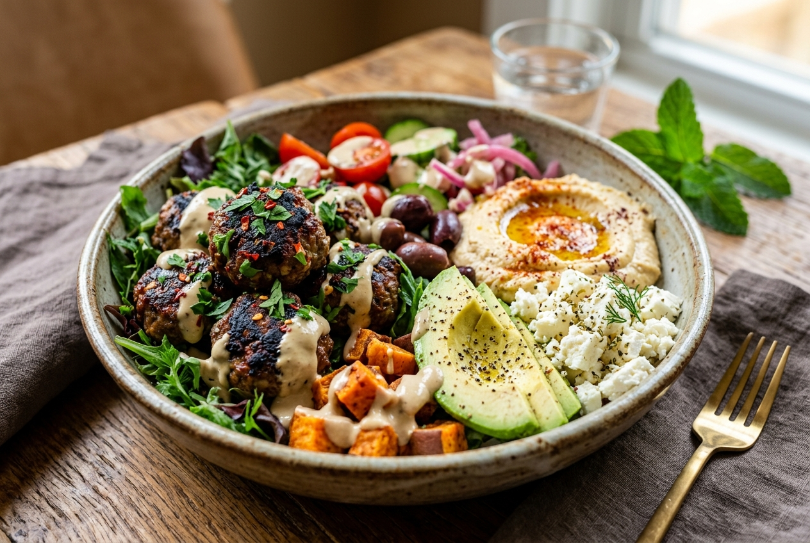
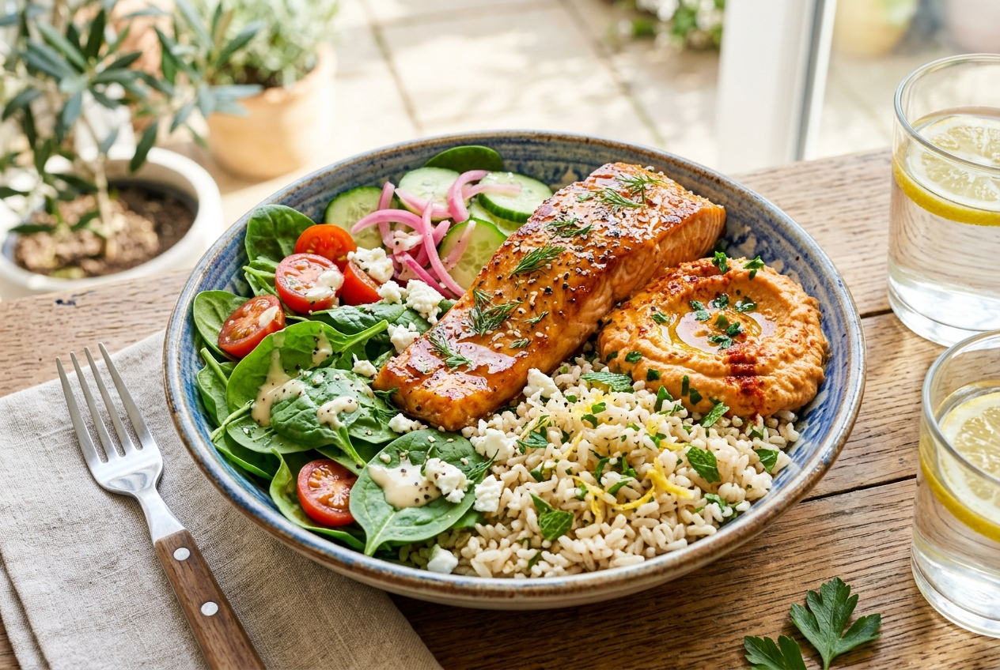
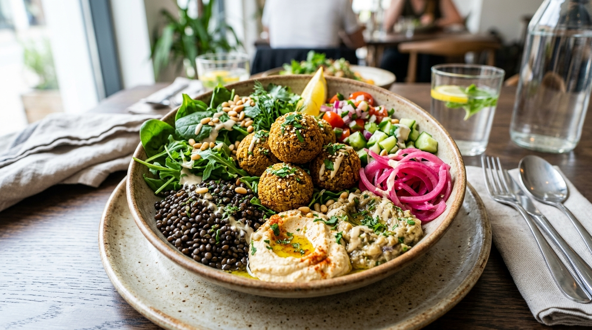

Staring at the Cava menu and not sure what to order? You're not alone. This guide gives you real Cava prices, real calorie counts, every signature bowl on the current menu, and simple steps to build your own bowl the right way.
Short on time? Here's the full Cava menu lineup side by side, so you can compare price, calories, and protein before reading further.
| Signature Bowl | Typical Price* | Calories | Protein Level | Best For |
|---|---|---|---|---|
| Chicken + Rice Bowl | $11.55–$13.25 | 700–715 | High (~33g) | First-timers, balanced meals |
| Harissa Avocado Bowl | $12.75–$14.45 | 810–885 | High | Bold, layered flavor |
| Spicy Lamb + Avocado Bowl | $15.05–$16.75 | ~795 | Moderate-High | Spice lovers |
| Salmon, Yogurt Dill | $15.75–$17.45 | ~710 | Very High (~35g) | Highest-protein salmon option |
| Salmon, Strawberry Sesame | $15.75–$17.45 | ~700 | High | First-time salmon orders |
| Falafel Crunch | $11.55–$13.25 | ~860 | Moderate (plant-based) | Best vegetarian pick |
| Steak + Harissa | $15.05–$16.75 | ~615 | High | Leaner red-meat option |
| Greek Salad Bowl | $11.95–$13.65 | ~585 | High (~33g) | No-carb, low-calorie meal |
| Harissa Chicken Power Bowl | $12.75–$14.45 | N/A** | High | Sweet potato fans |
| Spicy Lamb + Sweet Potato | $15.05–$16.75 | N/A** | Moderate-High | Heartier lamb option |
*Prices are typical ranges based on protein tier and vary by location. **Calorie data for 2026's newest additions was not yet published at the time of writing; check the Cava app for the exact figure on your build.
A Cava bowl costs between $10.97 and $19.89, depending on how you build it. Build-your-own orders sit at the lower end of that range, while signature bowls with premium proteins like steak, lamb, or salmon push closer to the top. Prices also shift by location, and big cities or airports usually charge 10 to 15 percent more than the national average. Knowing this range ahead of time stops you from assuming every bowl costs the same.
One thing most people miss: Cava gives you up to three dips free with every order, something a lot of competing chains charge extra for. A signature bowl with a standard protein, like chicken or falafel, usually costs between $11.55 and $14.45. Premium proteins raise that to $15.05 or more, and adding glazed salmon as an extra protein typically adds $3.95 to $4.95 on top of your base order. If you're watching your budget, a build-your-own bowl with a standard protein is almost always cheaper than a signature bowl with the same ingredients.
Cava bowl calories usually fall between 400 and 900, and the number depends mostly on your base, protein, and how many dips or toppings you add. A light bowl made with greens, grilled chicken, and one dip can stay under 500 calories. A fully loaded signature bowl with rice, a second protein, and multiple dips can pass 850. This wide range is actually a good thing, since it means the menu works for very different calorie goals.
Here's something worth knowing: published nutrition numbers for the same item can vary between sources, sometimes by 50 to 80 calories for something as small as falafel. This happens because recipes change over time, and outside nutrition databases don't always update on the same schedule as the restaurant. The most accurate numbers come straight from Cava's own app, which calculates calories based on your exact build. Use the ranges in this guide as a solid starting point, then confirm your specific order in the app before checkout.
The Cava menu splits into two categories: signature bowls created by the culinary team, and build-your-own orders where you pick every ingredient. The signature bowls below make up the current lineup, including several added throughout 2026. Knowing what makes each one work will help you pick the right one for what you actually want to eat.

The Spicy Lamb + Avocado Bowl is one of the boldest picks on the menu, made with seasoned lamb meatballs, avocado, Crazy Feta, hummus, and a lemon herb tahini dressing. The lamb brings real heat from cumin, coriander, and chili, and the avocado cools that heat down.
The Cava Chicken + Rice Bowl is widely considered one of the most popular items on the menu, and it earns that reputation through balance rather than flash. Grilled chicken sits on saffron basmati rice with hummus, tzatziki, a tomato and cucumber salad, and crumbled feta. The chicken alone delivers about 33 grams of protein with very few carbs.
The Harissa Avocado Bowl combines harissa honey chicken, Crazy Feta, hummus, avocado, fire-roasted corn, pickled onions, and hot harissa vinaigrette. What makes it work is that it hits sweet, spicy, creamy, and tangy flavors all at once instead of leaning on just one.

Cava salmon bowls arrived in April 2026, when Cava added glazed salmon as its first seafood protein, marinated in a house-made pomegranate glaze and roasted until it caramelizes. The Strawberry Sesame Bowl pairs the salmon with brown rice, spinach, roasted red pepper hummus, and a strawberry sesame dressing. The Yogurt Dill Bowl uses arugula and saffron basmati rice with a lighter dressing.
A Cava grain bowl gives you a heartier base than plain greens without going all the way to rice. Saffron basmati rice and brown basmati rice each run about 240 calories on their own, while the Greens + Grains mix splits the difference at roughly 132 calories. This is the most commonly chosen base at Cava.

The Cava Falafel Bowl, called Falafel Crunch, is built from crispy falafel, a greens and grains base, hummus, roasted eggplant dip, pickled onions, pita crisps, and lemon herb tahini. The roasted eggplant dip brings a smoky depth that most fast-casual chains don't even attempt on a vegetarian item.
The Cava Steak Bowl, listed as Steak + Harissa, features thin-sliced, Mediterranean-seasoned steak over greens and grains with harissa, tzatziki, a tomato and cucumber salad, kalamata olives, and hot harissa vinaigrette. At roughly 615 calories, it's one of the leaner steak options in fast-casual dining.
The Greek Salad Bowl strips things back to grilled chicken, romaine, hummus, tzatziki, a tomato and onion salad, kalamata olives, crumbled feta, and Greek vinaigrette, with no rice or grains at all. Coming in around 585 calories with 33 grams of protein, it offers the cleanest macros of any meat-based bowl on the menu.
Cava's biggest menu update in years launched on January 5, 2026, bringing back white sweet potatoes after a five-year absence. The Harissa Chicken Power Bowl pairs harissa honey chicken with roasted white sweet potato, Power Greens, Crazy Feta, hummus, sumac slaw, and yogurt dill dressing. The Spicy Lamb + Sweet Potato Bowl goes heartier.
A build your own bowl at Cava follows five steps, and knowing what each one controls makes the process faster at the counter.
Your base sets the calorie floor and texture of the whole bowl. Light options like SuperGreens and Power Greens run 30 to 50 calories, arugula and romaine offer a crisp, neutral crunch, and heartier choices like saffron rice, brown rice, or black lentils run 200 to 290 calories. The Greens + Grains mix, at about 132 calories, stays the most popular pick because it balances lightness with enough substance for a full protein.
Your protein choice affects both calories and texture. Grilled chicken offers the best protein-to-calorie ratio on the menu, at roughly 33 grams of protein for 250 calories, making it the default pick if protein matters most to you. Falafel, glazed salmon, spicy lamb meatballs, and braised lamb each bring different fat and carb levels.
You get up to three free dips with every bowl, and this is where most of the flavor really comes from. Hummus and tzatziki form the base layer in most signature bowls, while Crazy Feta and harissa add sharper, spicier notes. The roasted eggplant dip is often skipped by first-time visitors, even though it brings more distinct flavor than either hummus option.
All toppings are free and unlimited, so there's little reason to hold back. Pickled onions add almost no calories while cutting through richer proteins like braised lamb better than most other toppings. Fire-roasted corn, kalamata olives, and the newer sumac slaw each bring their own texture, which matters more than people expect in a bowl.
One dressing comes free, and most locations will add a second one at no extra charge if you ask. Lemon herb tahini is generally considered the most popular dressing on the menu and works with nearly every base and protein combination. Heavier dressings like garlic sauce or Greek vinaigrette pair better with lighter greens, while yogurt dill works well against spicier proteins that need something cooling.
Based on visible ordering trends and the components used in Cava's top signature bowls, the most common build starts with Greens + Grains, grilled chicken or harissa honey chicken, hummus and tzatziki, a tomato and cucumber salad, and lemon herb tahini dressing. This combination closely mirrors the Chicken + Rice signature bowl.
For the lowest realistic calorie count while still getting solid protein, start with a romaine or SuperGreens base, add grilled chicken, include tzatziki and roasted eggplant dip, and finish with yogurt dill dressing. This build typically lands between 400 and 450 calories while still delivering around 33 grams of protein. Skipping rice entirely is the single biggest way to cut calories without losing protein.
Different goals call for different builds, and the menu is flexible enough to support most of them without unusual substitutions.
A romaine or SuperGreens base with grilled chicken, tzatziki, roasted eggplant dip, and yogurt dill dressing lands around 400 to 450 calories. This build avoids both rice and heavier dressings, the two ingredients most likely to push a bowl above 600 calories without you noticing.
Ordering a double protein, most commonly two servings of grilled chicken, pushes total protein toward 60 to 66 grams in one bowl. Adding black lentils as part of your base adds another 13 to 18 grams of plant protein on top of that. This build costs extra for the second protein, but it delivers a total that few fast-casual meals can match.
Skip rice and grains entirely for this one. Use romaine and arugula as your base, choose grilled chicken or braised lamb, add Crazy Feta, tzatziki, and avocado, then finish with Greek vinaigrette. This build keeps net carbs under 10 grams while still delivering enough fat and protein to feel like a full meal.
Start with black lentils and SuperGreens, add falafel, hummus, and harissa, top with roasted eggplant dip and pickled onions, and dress with skhug. This build has no animal products but still delivers roughly 22 to 27 grams of protein from the lentils and falafel combined.
The Harissa Avocado Bowl already covers most flavor categories, but building it yourself lets you push further. Add harissa honey chicken, Crazy Feta, harissa dip, avocado, pickled onions, fire-roasted corn, and hot harissa vinaigrette in one order. Sweet, spicy, smoky, creamy, and tangy all show up somewhere in that combination.